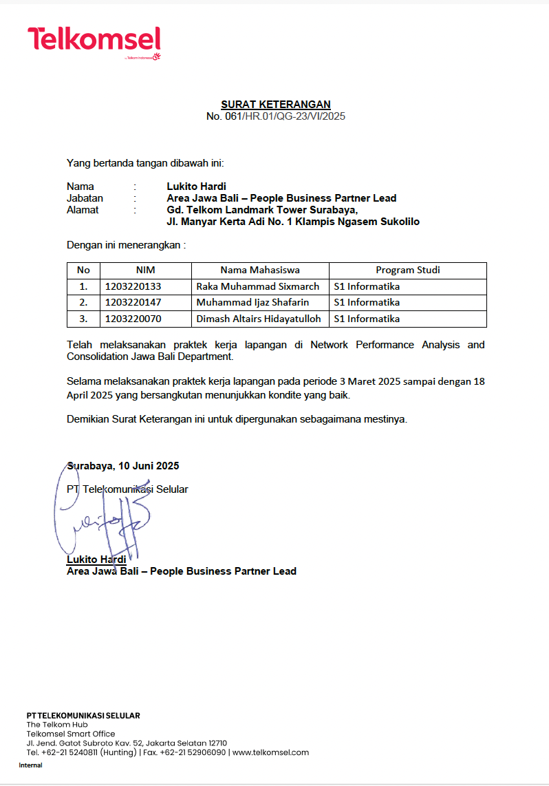

Data Analytics Intern
PT Telkomsel Regional Surabaya
Completed a remote internship from March 3 to April 18, 2025, focusing on network performance analysis and dashboard development. I transformed daily traffic data into monthly site-level information to explore usage patterns and evaluate payload potential.
- Processed more than 10.8 million rows of daily data using Python, PyCaret, and Pandas, then prepared monthly aggregates for each site as a basis for analysis.
- Evaluated classification models with PyCaret and used an Extra Trees Classifier to group payload potential into low, medium, and high classes.
- Built a Tableau dashboard showing site class distributions, monthly payload trends, and site details with interactive filters.
- Configured filters on selected worksheets so individual site reviews retained the overall distribution context, and prepared an analysis report as the internship deliverable.
PythonPandasPyCaretTableau

Internship Confirmation Letter
Issued by PT Telekomunikasi Selular, this letter confirms my internship in the Network Performance Analysis and Consolidation Jawa Bali Department from March 3 to April 18, 2025.
View confirmation letter